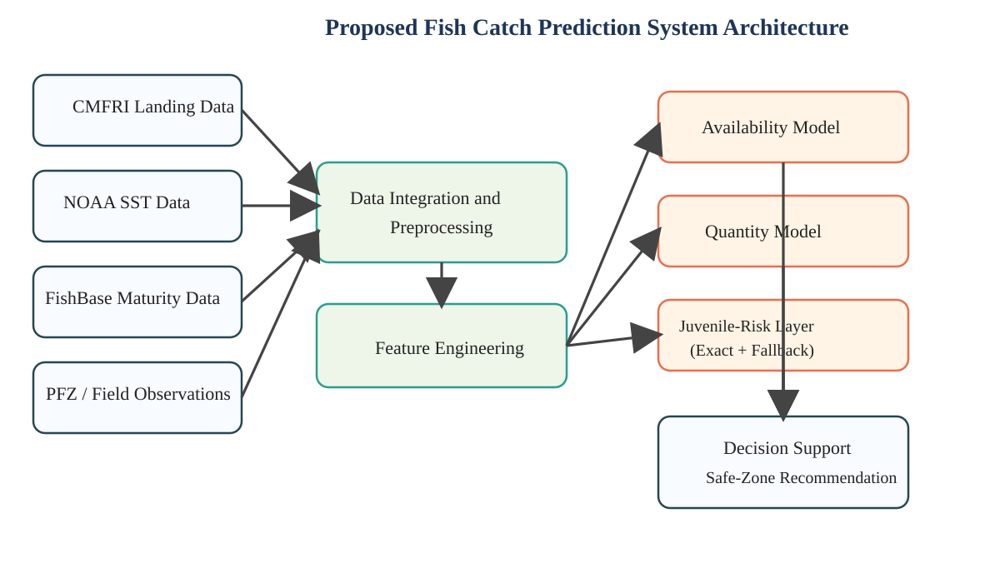
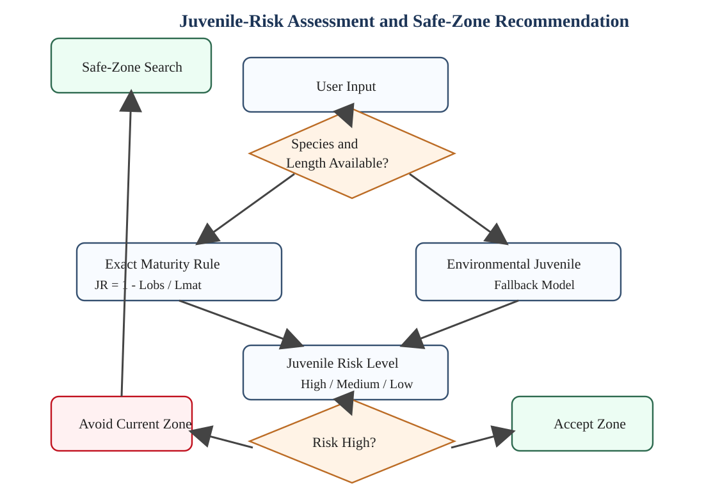
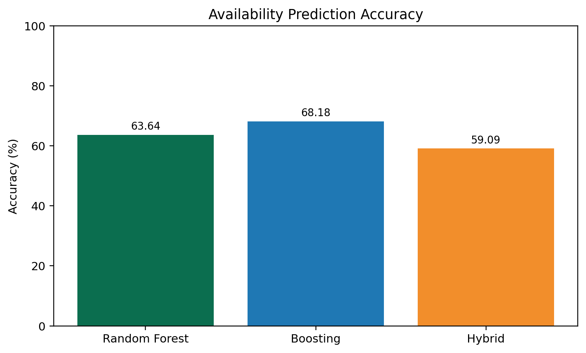
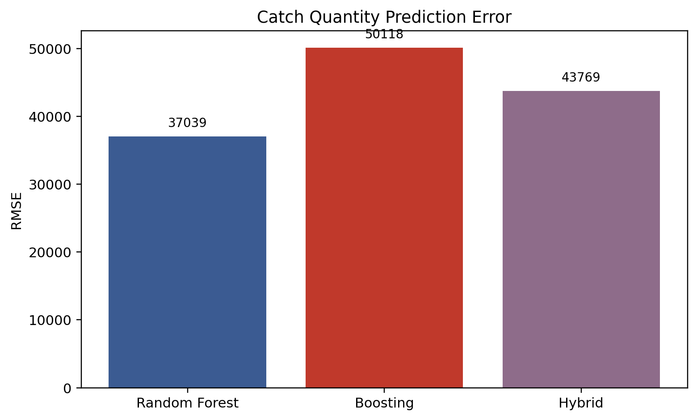
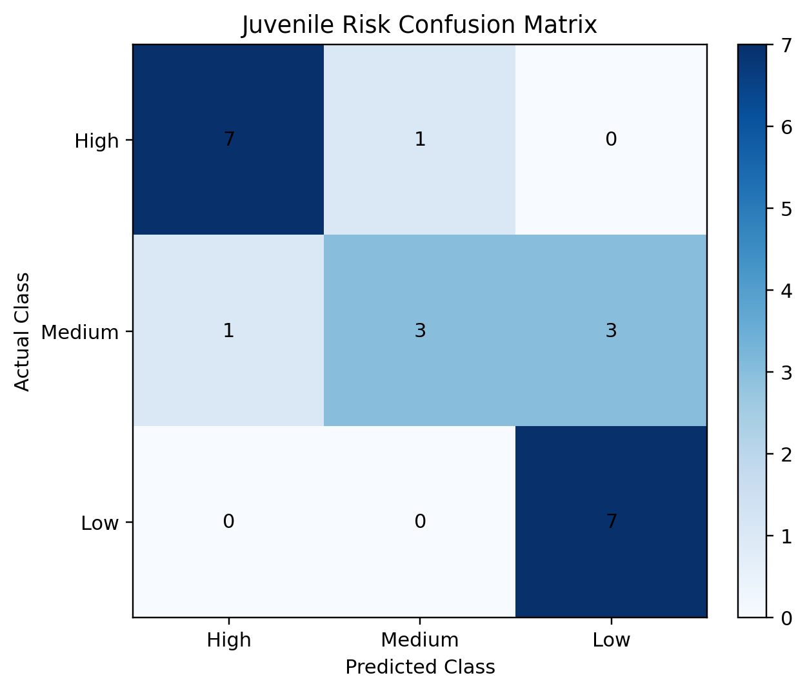
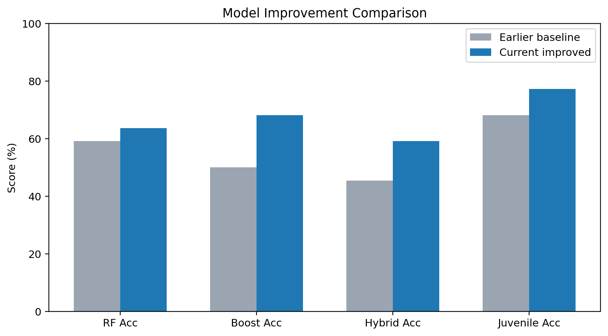
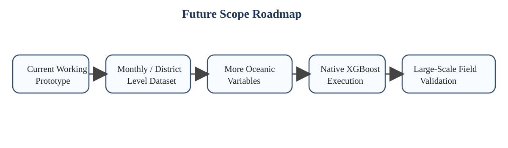

The present project, titled Fish Catch Prediction and Juvenile Risk Assessment System, was developed to provide a practical and sustainable decision-support framework for fishing operations using machine learning. The implemented system combines environmental factors, fisheries landing information, maturity-based biological knowledge, and field observations to predict fish availability, estimate expected catch quantity, assess juvenile-risk level, and recommend safer alternative fishing zones. This integrated approach makes the project useful not only for technical demonstration but also for fisheries awareness and sustainable resource usage.
One of the major strengths of the proposed system is that it moves beyond a single prediction task. Instead of only identifying whether fish may be available, the system also estimates the likely quantity of catch and checks whether the target zone contains an elevated juvenile-risk. When the risk is high, the model does not stop with a warning; it extends the result into a safe-zone advisory, thereby improving its practical value. This combination of prediction, biological screening, and recommendation makes the project more meaningful than a basic classification model.
The system is implemented using multiple machine learning pipelines. Fish availability is treated as a classification problem, catch quantity is modeled as a regression task, and juvenile risk is assessed using both exact maturity-based logic and an environmental fallback model. The strongest availability result in the current validation was obtained from the Boosting model, which reached an accuracy of 68.18%. For quantity prediction, the Random Forest regressor produced the lowest RMSE of approximately 37039.02. The juvenile-risk model, after balancing and improvement, achieved an accuracy of 77.27% with a weighted F1-score of 0.7538. These outcomes show that the proposed system is not merely theoretical; it is executable, testable, and capable of generating meaningful predictions from the available data.
Another key contribution of the project is the exact maturity-based juvenile-risk rule. When the species name, observed fish length, and maturity length are available, the system applies a biologically relevant formula to estimate juvenile-risk directly. When these values are absent, the system uses the environmental fallback model so that prediction remains possible. This dual strategy ensures both scientific relevance and practical usability. Therefore, the work successfully demonstrates a tabular machine learning framework that is academically valid, domain-relevant, and suitable for final-year project presentation.

The proposed system makes several important technical and practical contributions in the area of smart fisheries support. First, it provides a unified framework in which multiple prediction objectives are handled together. Instead of separating availability prediction, catch estimation, and juvenile-risk checking into unrelated tasks, the project combines them into one structured workflow that is easier to operate and explain.
Second, the work uses domain-relevant real-world inputs such as CMFRI landing data, NOAA sea surface temperature information, FishBase maturity values, and PFZ-style field observations. This improves the authenticity of the project and makes the outputs more defensible during technical review. Third, the system implements more than one algorithmic path, namely Random Forest, Boosting, Hybrid modeling, and a separate juvenile-risk layer. This allows comparative evaluation instead of relying on a single model choice.
The fourth major contribution is the inclusion of exact juvenile-risk assessment based on fish maturity information. This gives the project a conservation-oriented dimension. The fifth contribution is the safe-zone recommendation mechanism, which offers an actionable advisory when the current zone is considered risky. Finally, the project includes testing, validation, and algorithm demonstration support, making it suitable for academic presentation, viva, and future enhancement.

The proposed system has strong practical implications in the fisheries domain. It can support fishers in selecting favorable fishing regions by estimating whether a location is likely to yield usable catch. Such guidance can help reduce unnecessary fuel consumption, improve travel planning, and support operational decision-making. Even when the prediction is probabilistic, a model-based recommendation is valuable in marine conditions that often change rapidly.
The juvenile-risk module has particular importance from a sustainability perspective. Catching juvenile fish at large scale can negatively affect stock renewal and long-term fishery productivity. By checking the observed fish length against maturity length, the proposed system introduces a biologically meaningful safeguard. This makes the project relevant not only for machine learning demonstration but also for conservation-oriented fisheries planning.
The quantity estimation module can be useful for storage planning, labor arrangement, and local market coordination. Educationally, the project can serve as a reference implementation for applied machine learning with marine data. Institutionally, it can be extended by fisheries departments or academic laboratories into a broader decision-support tool for research and advisory use. Its modular structure also allows future inclusion of additional environmental variables and location-aware intelligence without redesigning the full system.



Although the system has achieved its objective as a working prototype, there is considerable scope for future enhancement. The first and most important direction is the expansion of the dataset using monthly, district-level, harbor-level, or zone-level fisheries records. A richer temporal and spatial dataset would allow the models to capture seasonal variation more effectively and improve prediction stability.
The next important direction is the integration of additional oceanographic variables such as salinity, chlorophyll concentration, currents, mixed layer depth, and improved dissolved oxygen measurements. These variables have strong ecological relationships with fish habitat and may improve both classification and regression performance. Another important enhancement is full native XGBoost execution and broader hyperparameter tuning for all models.
A further recommendation is the collection of more exact juvenile field observations. At present, the system supports exact maturity-based risk logic, but a larger field dataset would make the juvenile model more statistically strong and biologically reliable. Future versions may also incorporate uncertainty reporting, model explainability, GPS-assisted mobile deployment, and long-term validation against official advisories and fisheries records.
Therefore, the current work can be viewed as a strong academic prototype with clear pathways toward larger-scale deployment. Its modular design, real-world data orientation, and sustainability focus make it a suitable base for further research and practical fisheries applications.

